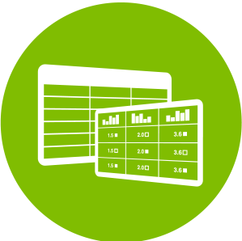

<!DOCTYPE html>
<html>
<head>
	<meta charset="UTF-8">
	<title>air fresher</title>

	<!-- mobile device -->
	<meta name="viewport" content="width=device-width, initial-scale=1.0, maximum-scale=1.0, user-scalable=no">

	<link rel="stylesheet" href="css/reset.css"/>
	<link rel="stylesheet" href="css/transformation.css"/>
	<link rel="stylesheet" href="css/loadinig.css"/>
	<link rel="stylesheet" href="css/popup.css"/>
	<link rel="stylesheet" href="css/style.css"/>

	<!-- libs -->
	<script src="js/lib/shim.js" type="text/javascript"></script>
	<script src="js/lib/underscore.js" type="text/javascript"></script>
	<script src="js/lib/jquery-2.1.1.js" type="text/javascript"></script>
	<script src="js/lib/jquery.mobile-1.4.4.js" type="text/javascript"></script>
	<script src="js/lib/backbone.js" type="text/javascript"></script>

	<!-- langs -->
	<script src="js/lang/en.js" type="text/javascript"></script>
	<script src="js/lang/ru.js" type="text/javascript"></script>

	<!-- services -->
	<script src="js/service/info.js" type="text/javascript"></script>
	<script src="js/service/template-master.js" type="text/javascript"></script>
	<script src="js/service/util.js" type="text/javascript"></script>

	<!-- views -->
	<script src="js/app/view/base/base-view.js" type="text/javascript"></script>
	<script src="js/app/view/title/title-view.js" type="text/javascript"></script>
	<script src="js/app/view/air-fresh/air-fresh-view.js" type="text/javascript"></script>
	<script src="js/app/view/how-it-works/how-it-works.js" type="text/javascript"></script>
	<script src="js/app/view/privacy-policy/privacy-policy.js" type="text/javascript"></script>
	<script src="js/app/view/popup/popup-view.js" type="text/javascript"></script>


	<script src="js/app/main.js" type="text/javascript"></script>

</head>
<body>

<div class="js-wrapper wrapper">

</div>

<script type="text/x-template" data-name="title">

	<div class="js-title title-view">

		<div class="flags-wrapper">

			<% APP.info.availableLangs.forEach(function(lang){ %>

			<% if (lang === APP.info.lang) { %>
				<div class="js-set-lang active flag flag-<%= lang %>" data-lang="<%= lang %>">&nbsp;</div>
			<% } else { %>
				<div class="js-set-lang disable flag flag-<%= lang %>" data-lang="<%= lang %>">&nbsp;</div>
			<% }; %>

			<% }); %>

		</div>

		<div class="table table-button-wrapper">
			<div class="table-row">
				<div class="table-cell">
					<div class="main-button" data-route="air-fresh"><%= APP.langMaster.freshAir %></div>
					<div class="main-button" data-route="how-it-works"><%= APP.langMaster.howItWorks %></div>
					<div class="main-button" data-route="privacy-policy"><%= APP.langMaster.privacyPolicy %></div>
				</div>
			</div>
		</div>

		<div class="copyright">&copy; statlex.com 2014 </div>

	</div>

</script>

<script type="text/x-template" data-name="air-fresh">

	<div class="js-air-fresh air-fresh-view">

		<%= APP.templateMaster.tmplFn.header({ title: APP.langMaster.freshAir }) %>

		<div class="circle-wrapper">
			<div class="circle">&nbsp;</div>
		</div>

		<div class="windows8 getting-air-data js-getting-air-data">
			<div class="wBall" id="wBall_1">
				<div class="wInnerBall">
					&nbsp;
				</div>
			</div>
			<div class="wBall" id="wBall_2">
				<div class="wInnerBall">
					&nbsp;
				</div>
			</div>
			<div class="wBall" id="wBall_3">
				<div class="wInnerBall">
					&nbsp;
				</div>
			</div>
			<div class="wBall" id="wBall_4">
				<div class="wInnerBall">
					&nbsp;
				</div>
			</div>
			<div class="wBall" id="wBall_5">
				<div class="wInnerBall">
					&nbsp;
				</div>
			</div>

			<div class="getting-data-word"><%= APP.langMaster.dataCollection %></div>

		</div>

		<div class="clearing-line-wrapper js-clearing-line-wrapper hidden">
			<div class="clearing-line js-clearing-line">&nbsp;</div>
			<div class="clearing-word"><%= APP.langMaster.clearing %></div>
		</div>

		<div class="js-refresh-wrapper refresh-wrapper hidden">
			<div class="refresh-button js-refresh-view">&nbsp;</div>
			<p class="refresh-text"><%= APP.langMaster.clearAirAgain %></p>
		</div>


	</div>

</script>

<script type="text/x-template" data-name="how-it-works">

	<div class="js-how-it-works">
		<%= APP.templateMaster.tmplFn.header({ title: APP.langMaster.howItWorks }) %>
		<div class="text-wrapper">

			<% if ( APP.info.lang === 'en' || APP.info.lang === null) { %>

			
			<h4>Phase 1</h4>
			
			<p>Collecting data on the composition of the ambient air and malodorous substances.</p>
			<h4>Phase 2</h4>
			
			<p>Wave special frequency is collecting and archiving malodorous substances.</p>
			<h4>Phase 3</h4>
			
			<p>Sending the collected materials to the server via Wi-Fi.</p>
			
			<h4 class="center-text">Your Air is Cleaned!</h4>

			<% }; %>

			<% if ( APP.info.lang === 'ru') { %>

			
			<h4>Фаза 1</h4>
			
			<p>Сбор данных об окружающем воздухе и составе дурнопахнущих веществах.</p>
			<h4>Фаза 2</h4>
			
			<p>Волной специальной частоты происходит сбор и архивация дурнопахнущих веществ.</p>
			<h4>Фаза 3</h4>
			
			<p>Отправка собранных веществ на сервер через Wi-Fi.</p>
			
			<h4 class="center-text">Ваш воздух очищен!</h4>

			<% }; %>

		</div>
	</div>

</script>

<script type="text/x-template" data-name="header">

	<div class="header">
		<div class="back-button js-back">&nbsp;</div>
		<div class="header-title ellipsis"><%= title %></div>
	</div>

</script>

<script type="text/x-template" data-name="privacy-policy">

	<div class="js-privacy-policy">

		<%= APP.templateMaster.tmplFn.header({ title: APP.langMaster.privacyPolicy }) %>

		<div class="text-wrapper">

		<% if ( APP.info.lang === 'en' || APP.info.lang === null) { %>

			<h4>1. Introduction</h4>

			<p>
				This app is owned and operated by the Statlex. Your privacy on the
				Internet is of the utmost importance to us. At Statlex, we want to make your experience online satisfying
				and safe.
			</p>

			<p>
				Because we gather certain types of information about our users, we feel you should fully understand our
				policy and the terms and conditions surrounding the capture and use of that information. This privacy
				statement discloses what information we gather and how we use it.
			</p>

			<h4>2. Personal information collected</h4>

			<p>Any of the information we collect from you may be used in one of the following ways:</p>
			<ul>
				<li>To personalize your experience: your information helps us to better respond to your individual needs.</li>
				<li>To improve our app: we continually strive to improve our app offerings based on the information
					and feedback we receive from you.
				</li>
				<li>To improve customer service: your information helps us to more effectively respond to your customer
					service requests and support needs.
				</li>
			</ul>
			<p>We gather two types of information about users:</p>
			<ul>
				<li>Information that users provide through optional, voluntary submissions. These are voluntary submissions
					to receive our electronic newsletters, and from participation in polls and surveys.
				</li>
				<li>Information Statlex gathers through aggregated tracking information derived mainly by tallying page
					views throughout our app.
				</li>
			</ul>

			<p>This information allows us to better tailor our content to readers' needs and to help
				our marketing specialists better understand the demographics of our audience.
				Emails from You: If a user contacts Statlex by email, Statlex will use the personally identifiable email
				address information only to respond to the specific inquiry. Additionally, as part of the Services, you will
				receive emails and other communications relating to your submissions to Statlex.</p>

			<p>All users acknowledge and agree that by posting any user submissions, Statlex may send you email and other
				communication that it
				determines in its sole discretion relate to said user.</p>

			<p>Emails from Us: Statlex may send its users special announcements and correspondence, including newsletters,
				virtual greetings, promotional offers and other messages. The messages may contain registration information,
				additional Services features or other Statlex information. As discussed herein, at any time the user may
				exercise its right to opt-out or cancel the consent to collect information for these purposes.
			</p>

			<p>Cookies: we may place a text file called a "cookie" in the browser files of your computer. The cookie itself
				does not contain Personal Information although it will enable us to relate your use of this app to
				information that you have specifically and knowingly provided. But the only personal information a cookie
				can contain is information you supply yourself. A cookie can&#39;t read data off your hard disk or read cookie
				files created by other sites or app. Statlex uses cookies to track user traffic patterns (as described above). Our
				advertising system delivers a one-time cookie to better track ad impressions and click rates.
			</p>

			<p>
				You can refuse cookies by turning them off in your browser. If you&#39;ve set your browser to warn you before
				accepting cookies, you will receive the warning message with each cookie. You do not need to have cookies
				turned on to use this app. However, you do need cookies to participate actively in message boards, forums,
				polling and surveys.
			</p>

			<h4>3. Sharing of the information</h4>

			<p>
				Statlex uses the above-described information to tailor our content to suit your needs and understand our
				audience&#39;s demographics. We will not share information about individual users with any third party, except
				to comply with applicable law or valid legal process or to protect the personal safety of our users or the
				public.
			</p>

			<h4>4. Security</h4>

			<p>
				Statlex operates secure data networks protected by industry standard firewall and password protection
				systems. Our security and privacy policies are periodically reviewed and enhanced as necessary and only
				authorized individuals have access to the information provided by our customers.
			</p>

			<h4>5. Changes to This Privacy Policy</h4>

			<p>
				Statlex reserves the right, at its full and complete discretion to change, modify, amend, add, subtract, or
				otherwise remove portions of its Privacy Policy at any time and for any or no reason. We will post any
				updates to the Privacy Policy on this page. Please periodically check for any changes. Your continued access
				to and use of the Services after the posting of any amendments, deletions or other changes to the Privacy
				Policy will constitute your acceptance, acknowledgment and agreement to the respective changes.
			</p>

			<h4>6. Contact Us</h4>

			<p>If you have any questions about this Privacy Policy or your Personal Information, please contact us at <a class="js-external-link link" href="mailto:statlexinfo@gmail.com">statlexinfo@gmail.com</a></p>

		<% }; %>


		<% if ( APP.info.lang === 'ru' ) { %>


		<h4> 1. Введение </h4>

		<p>
			Это приложение является собственностью и управляется по Statlex. Ваша частная жизнь на
			Интернет имеет огромное значение для нас. В Statlex, мы хотим, чтобы сделать ваш опыт онлайн удовлетворяющих
			и безопасно.
		</p>

		<p>
			Поскольку мы собираем определенную информацию о наших пользователях, мы чувствуем, вы должны полностью понять наш
			Политика и термины и условия, окружающие получения и использования этой информации. Это конфиденциальности
			заявление раскрывает какую информацию мы собираем и как мы ее используем.
		</p>

		<h4> 2. Личная информация, собранная </h4>

		<p> Любая информация, которую мы получаем от вас могут быть использованы в одном из следующих способов: </p>
		<ul>
			<li> Чтобы персонализировать ваш опыт: Ваша информация поможет нам более эффективно реагировать на ваши индивидуальные потребности </li>.
			<li> Для улучшения наше приложение: мы постоянно стремимся улучшить наши предложения App на основе информации,
				и обратной связи мы получаем от вас.
			</li>
			<li> Для повышения качества обслуживания клиентов: Ваша информация поможет нам более эффективно реагировать на вашего клиента
				запросы на обслуживание и нуждается в поддержке.
			</li>
		</ul>
		<p> Мы собираем два вида информации о пользователях: </p>
		<ul>
			<li> Информация, что пользователи предоставляют через дополнительные, добровольные материалов. Это добровольные материалы
				получать наших электронных бюллетеней, и от участия в опросах и обследованиях.
			</li>
			<li> Информация Statlex собирает в агрегированном отслеживая информации, полученной в основном подсчета страницу
				просмотров по всему нашего приложения.
			</li>
		</ul>

		<p> Эта информация позволяет нам лучше адаптировать наш контент на потребности читателей и помочь
			наши маркетологи лучше понять демографию нашей аудитории.
			Письма от вас: Если пользователь контактирует Statlex по электронной почте, Statlex будет использовать личную электронную почту
			Информация об адресе только ответить на конкретный запрос. Кроме того, в рамках услуги, вы будете
			получать сообщения электронной почты и другие сообщения, касающиеся ваших представлений в Statlex. </p>

		<p> Все пользователи признаете и соглашаетесь, что, разместив любые материалы пользователей, Statlex может выслать Вам по электронной почте и другие
			связи, что его
			определяет по своему усмотрению, относятся к указанным пользователем. </p>

		<p> писем от нас: Statlex может отправить своим пользователям специальные объявления и переписку, в том числе бюллетени,
			виртуальные поздравления, рекламные предложения и другие сообщения. Сообщения могут содержать информацию о регистрации,
			дополнительные возможности услуги или другой информации Statlex. Как обсуждалось в данном документе, в любой момент времени пользователь может
			осуществлять свое право отказа или отмены согласие на сбор информации для этих целей.
		</p>

		<p> Cookies: мы можем разместить текстовый файл с именем "печенье" в файлах браузера на вашем компьютере. Сам печенья
			не содержит личной информации, но позволит нам связать использование данного приложения, чтобы
			информация, что вы специально и сознательно предоставили. Но только личная информация печенья
			может содержать информация предоставляете вы сами.Печенье не может прочитать данные с вашего жесткого диска или читать печенья
			файлы, созданные на других сайтах или приложения. Statlex использует куки для отслеживания моделей пользовательского трафика (как описано выше). Наша
			рекламная система обеспечивает одноразовый печенье лучше отслеживать показов и нажмите цены.
		</p>

		<p>
			Вы можете отказаться от печенья, выключив их в Вашем браузере. Если вы настроить свой браузер, чтобы предупредить вас, прежде чем
			принимающие печенье, вы получите предупреждающее сообщение с каждого печенья. Вам не нужно иметь печенье
			включен для использования этого приложения. Тем не менее, вам нужно печенье активно участвовать в досках объявлений, форумах,
			опрос и исследования.
		</p>

		<h4> 3. Обмен информации </h4>

		<p>
			Statlex использует вышеописанную информацию адаптировать наш контент, чтобы удовлетворить ваши потребности и понять наш
			демография аудитории. Мы не будем передавать информацию об отдельных пользователях третьим лицам, за исключением
			В соответствии с действующим законодательством или правомерного судебного процесса или для защиты личной безопасности наших пользователей или
			общественности.
		</p>

		<h4> 4. Безопасность </h4>

		<p>
			Statlex работает защищенных сетей передачи данных, защищенных промышленного стандарта брандмауэр и защиту паролем
			системы. Наша политика безопасности и конфиденциальности периодически пересматривается и повышается по мере необходимости и только
			уполномоченные лица имеют доступ к информации, предоставленной нашими клиентами.
		</p>

		<h4> 5. Изменения в политике конфиденциальности </h4>

		<p>
			Statlex оставляет за собой право по своему полного и всестороннего усмотрению изменять, модифицировать, изменять, добавлять, вычитать, или
			в противном случае удалять части своей политикой в любое время и по любой причине или без нее. Мы будем размещать
			Обновления в политике конфиденциальности на этой странице. Пожалуйста, периодически проверять любые изменения. Ваш постоянный доступ
			и использование Услуг после публикации любых изменений, удалений или других изменений в частной жизни
			Политика будет означать ваше согласие, подтверждение и согласие с соответствующими изменениями.
		</p>

		<h4> 6. Связаться с нами </h4>

		<p> Если у вас есть вопросы по поводу этой Политики конфиденциальности или вашей персональной информации, пожалуйста, свяжитесь с нами по адресу <a class="link" href="mailto:statlexinfo@gmail.com"> statlexinfo@gmail.com </a> </p>
		
		<% }; %>

		</div>

	</div>

</script>

<script type="text/x-template" data-name="popup">

	<div class="js-popup-wrapper popup-wrapper">

		<div class="table popup-wrapper-table js-back">

			<div class="table-row">
				<div class="table-cell">

					<div class="popup-container js-popup-container">

						<div class="popup-text"><%= text %></div>
						<div class="js-back popup-button">ok</div>

					</div>

				</div>
			</div>

		</div>


	</div>

</script>


</body>
</html>